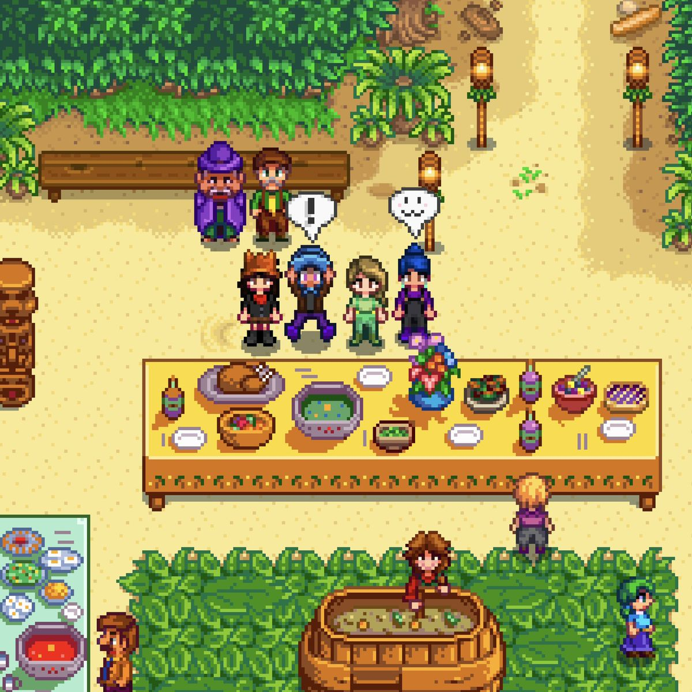
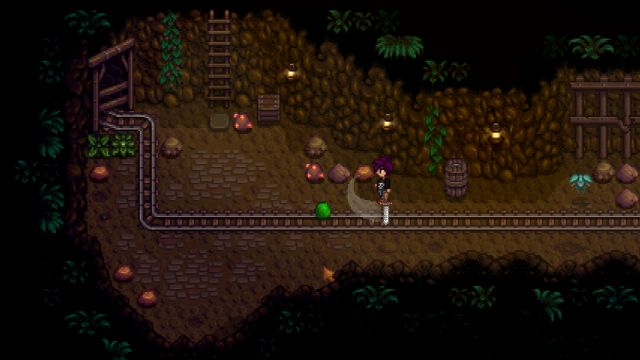
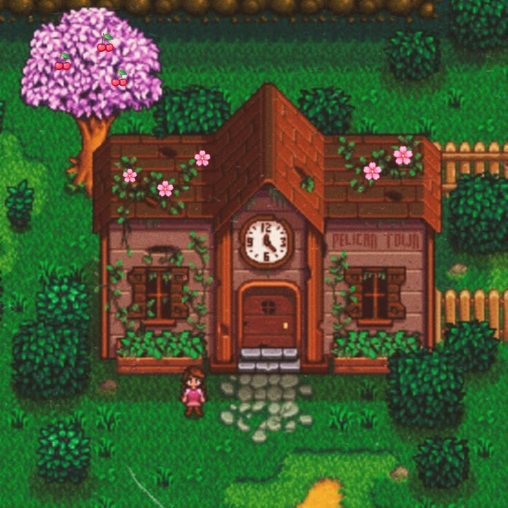

Stardew Valley
Te mudas a la tranquilidad del Valle
Stardew Valley es un juego de simulación y aventura donde dejás atrás la rutina de la ciudad para comenzar una nueva vida en el campo. En el valle podrás cultivar, criar animales, explorar cuevas, conocer a los aldeanos y construir tu propia historia a tu ritmo, disfrutando de la calma y la sencillez de la vida rural.
Forja tu propio camino

Entablá amistad con los aldeanos del valle y conocé sus historias, rutinas y personalidades únicas. Regalales objetos, participá de su día a día y, con el tiempo, formá vínculos más profundos que influyen en tu vida dentro del valle.
Aventurate en las profundidades de las minas para recolectar minerales, enfrentarte a criaturas y descubrir secretos ocultos. Cada nivel presenta nuevos desafíos y recompensas que te ayudarán a mejorar tu granja y tus herramientas.


El antiguo Centro Cívico del pueblo está en ruinas, pero podés devolverle su esplendor completando objetivos y ayudando a la comunidad. Tus decisiones influirán en el futuro de Stardew Valley y en el desarrollo del pueblo.
Stores